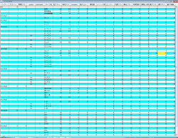
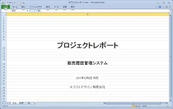
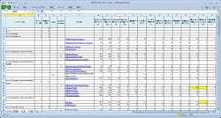
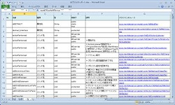
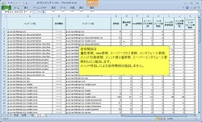
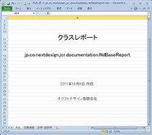
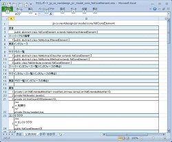
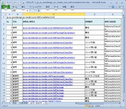
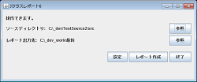
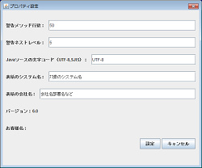

Javaソースからメトリクスを抽出しドキュメントを生成するツール
Ｊクラスレポート
● 無料ソフト
● Javaソースからドキュメント（Excel形式）を自動生成します。
● クラス数, メソッド数, 属性数, ステップ数, ネストレベル等を抽出します。
● Java抽象構文木をもとに計測しますので、コードスタイルの違いにも強いです。
● 古いJavaソースもお試しください。
● 本ツールはJavaスタンドアロンプログラムです。(インストール不要)
「行数について」
● カスタマイズ (有料)
ローカルなコーディングルールや、特別な指標を追加することもできます。
お問合せ下さい。お問合せ
Jクラスレポートとは
Javaソースコードからドキュメント, 設計書, 仕様書を自動生成するツールです。（Excel形式）
いつでもJavaソースと整合したドキュメントが得られます。
最新のドキュメントが短時間で得られます。
Jクラスレポートは、Eclipse等のIDEプラグインではなく、Javaで作成したスタンドアロンプログラムです。
インストール操作は不要です。
用途
これらのドキュメントは納品や保守といったタイミングで役立ちます。
また、ソフトウェア・メトリクス（クラス数,メソッド数,ステップ数,ネストレベル,制御文数,依存関係など）の抽出用、管理用として日々の
開発業務中でも有用です。
アジャイルなどイテレーティブな開発においても、最新のドキュメントをいつでも繰り返し作成できるという事は重要です。
ソースコードとかい離していないドキュメントを人手で作るということは困難で、手間もかかり、信頼性も一定しません。
また、そのような作業は開発者の思考を止めてしまうかもしれません。
本ツールで生成できる範囲は限られていますが、ドキュメントに関わる工数を削減し、一定の精度を維持できます。
Ｊクラスレポートは、指定されたソースディレクトリ以下の全ディレクトリと全Javaファイルを読込み、次の２種類のドキュメント（Excelファイル）を作成します。
・ プロジェクト・ドキュメント （プロジェクト設計書、プロジェクト仕様書相当）
・ クラス・ドキュメント （クラス設計書、クラス仕様書相当）
※ドキュメントの品質・精度は、Javaソースコード中のJavadocコメントに依存します。
動作条件
Java Version 6 以上
Excel2010以降がない環境でもサマリ－表は表示できます。
確認済みの動作環境
実行環境： Windows7 Professional, Windows8.1Pro
出力結果の確認環境： Excel 2010
対象ソースコードについて
Java Version 6
Java Version 7
Java Version 8 （確認中）
プロジェクト・ドキュメント
Ｊクラスレポートでは指定されたソースディレクトリ以下を１つのプロジェクトとして扱います。
プロジェクト・ドキュメントはプロジェクト設計書・プロジェクト仕様書に相当します。
プロジェクト全体を現わす情報を含んでいます。
「指標」と「一覧」で構成されます。
（指標・ソフトウェアメトリクス）
・ パッケージ一覧
・ サブパッケージ数
・ クラスう数
・ ステップ数
・ 実ステップ数
・ Javadocコメント行数
・ ブロックコメント行数、ラインコメント行数
・ 属性数/クラス
・ メソッド数/クラス
・ コンストラクタ数/クラス
・ 内部クラス数/クラス
・ 無名クラス数/クラス
・ 列挙型数/クラス
・ 初期化子数/クラス
・ 最大ステップ数/メソッド （設定値を超えた場合は警告（セルが黄色）表示されます）
・ 最深ネストレベル/メソッド （設定値を超えた場合は警告（セルが黄色）表示されます）
・ 最大制御文数/メソッド
（一覧）
クラス名,インタフェース名,列挙型名,アノテーション名,属性名,メソッド名
要素名の定義場所（クラス・ドキュメントへのハイパーリンク付き）
クラス・ドキュメント
クラス設計書・クラス仕様書に相当します。
クラス毎のドキュメントで、「定義情報」と「参照・被参照」で構成されます。
（定義情報シート）
・ クラス・インタフェース・アノテーション・列挙型宣言（Javadoc＋宣言文）
・ 属性（Javadoc＋宣言文）
・ コンストラクタ（Javadoc＋宣言文）
・ メソッド（Javadoc＋宣言文）
・ 内部クラス宣言（Javadoc＋宣言文）
・ クラス内定義の列挙型宣言（Javadoc＋宣言文）
（参照・被参照シート）
・ 方向（参照または被参照）
・ 参照先・参照元（クラス・ドキュメントへのハイパーリンク付き）
・ 使用箇所
スーパークラス
インタフェース
属性型
メソッド戻り値型、引数型
インスタンス生成（new式）
用途
・ 納品用仕様書・納品用ドキュメント（プロジェクト設計書、クラス設計書）
・ 保守用（忠実な情報、影響範囲）
・ バージョンアップ時の影響調査
・ 品質管理
・ 進捗管理
など
インストールとアンインストール
インストール、アンインストールは簡単です。
インストールは解凍するだけ、アンインストールはそれを削除するだけです。
ダウンロードしたZIPファイルを解凍し、「はじめにお読みください.txt」をお読みください。
ユーザガイド
インストール方法、操作方法などはユーザガイドをご覧ください。
ユーザガイドPDF版 （280KB）
ダウンロードページへ
特注機能・特注フォーマットなど
こちらからお問合せください。
更新履歴
[2015.11.15] JClassReport8.2文書改訂：有効ステップ数の定義を変更
[2015.11.3] JClassReport8.2公開)（行数に関する不具合修正）
[2015.1.25] JClassReport8.1公開
[2012.4.11]
JClassReport7（無料版）公開
[2011.10.21]
プロジェクト・ドキュメントに「依存」シートを追加しました。
画面例
「サマリー表」
拡大表示
「表紙」

拡大表示
「指標」

拡大表示
「要素名一覧」

拡大表示
「依存」

拡大表示
「表紙」

拡大表示
「クラス定義情報」

拡大表示
「参照・被参照関連」

拡大表示
操作画面

拡大表示
設定画面

拡大表示